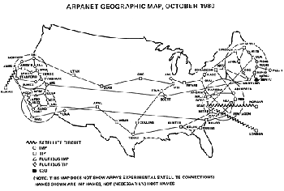

Definición y Propósito
Una red informática es un conjunto de dispositivos electrónicos interconectados. Su propósito fundamental es compartir recursos, intercambiar datos y facilitar la comunicación humana y artificial.
💻 Dispositivos Comunes
- Computadoras: Equipos y servidores corporativos.
- Periféricos: Impresoras y escáneres de red.
- Móviles: Teléfonos y tablets.
- IoT: Sensores y domótica inteligente.
🛡️ Reglas y Protocolos
Para interactuar, usan protocolos estandarizados (e.g. TCP/IP) predefiniendo cómo la información viaja de manera ordenada y segura, sin importar en lo absoluto el continente hacia el que vaya el destino.
Orígenes de las Redes
La historia tiene sus raíces en la Guerra Fría. Para evitar que un ataque nuclear destruyera las redes de mando unificadas, la agencia DARPA financió un sistema de comunicaciones descentralizado; el abuelo de Internet.
Financiada por DARPA, nace la precursora directa de Internet, conectando nodos universitarios. Su primer mensaje transmitido fue "LOGIN" (aunque inicialmente colapsó en la o: "LO").

Vint Cerf y Bob Kahn publicaron el protocolo TCP/IP, resolviendo un enigma inabarcable: de qué forma intercomunicar el software y hardware de diferentes empresas privadas.
Tim Berners-Lee inventó en el CERN la WWW desarrollando tres piezas maestras: HTML, HTTP y URL. El navegador Mosaic abriría estas maravillas a los civiles a nivel masivo.
Hacia el Internet Moderno
Desde aquellos pioneros hasta la actualidad, Internet conecta a más de cinco mil millones de personas. Y con la llegada de billones de sensores automatizados, hoy estas son las fuerzas que continúan ensanchando la red:
🌐 Internet de las Cosas
Miles de millones de dispositivos cotidianos conectados recopilando y compartiendo datos de forma invisible sin interrupción.
📶 Conectividad 5G
Redes móviles de nueva generación con latencia minúscula (milisegundos) para operar entornos o máquinas críticas.
☁️ Cómputo Nube
Desplazamiento real del almacenamiento hacia colosales centros de datos a los que todos acudimos al unísono.
🤖 Inteligencia Artificial
Mentes de software para defender, priorizar y enrutar el inimaginable gran volumen de datos contemporáneo en la luz.